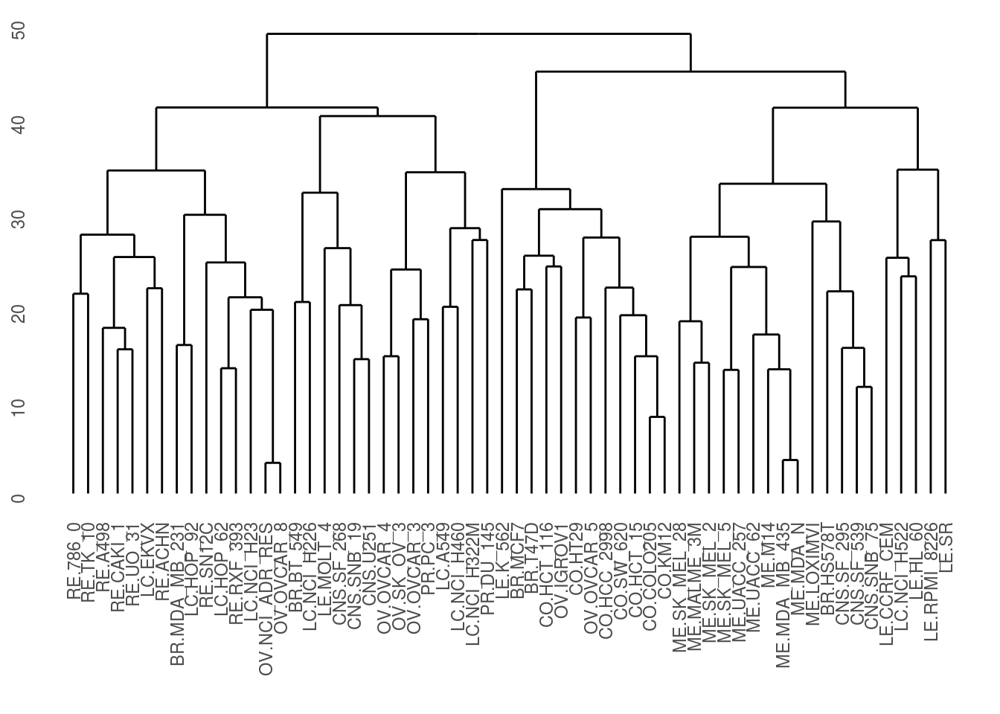

Scraping Nuclear Reactors
Oliver Thistlethwaite
The purpose of this project is to study nuclear reactors in Japan. First we’ll read in the required libraries.
library(dplyr)
library(knitr)
library(ggplot2)
library(rvest)
library(lubridate)
library(scales)Now we will read in tables of nuclear reactors from Wikipedia http://en.wikipedia.org/wiki/List_of_nuclear_reactors via the webscraping library, rvest.
page <- "http://en.wikipedia.org/wiki/List_of_nuclear_reactors"
table_nodes <- page %>%
read_html() %>%
html_nodes("table")
table_list <-
html_table(table_nodes[1:30], fill = TRUE)After some searching, we find the relevant table is at position 25.
table <- table_list[[25]]
table %>% head() %>% kable()| Name | Reactor No. | Reactor | Reactor | Status | Capacity in MW | Capacity in MW | Construction Start Date | Commercial Operation Date | Closure |
|---|---|---|---|---|---|---|---|---|---|
| Name | Reactor No. | Type | Reactor | Model | Capacity in MW | Capacity in MW | Construction Start Date | Net | Gross |
| Fukushima Daiichi | 1 | BWR | BWR-3 | Inoperable | 439 | 460 | 25 July 1967 | 26 March 1971 | 19 May 2011 |
| Fukushima Daiichi | 2 | BWR | BWR-4 | Inoperable | 760 | 784 | 9 June 1969 | 18 July 1974 | 19 May 2011 |
| Fukushima Daiichi | 3 | BWR | BWR-4 | Inoperable | 760 | 784 | 28 December 1970 | 27 March 1976 | 19 May 2011 |
| Fukushima Daiichi | 4 | BWR | BWR-4 | Shut down/ Inoperable | 760 | 784 | 12 February 1973 | 12 October 1978 | 19 May 2011 |
| Fukushima Daiichi | 5 | BWR | BWR-4 | Shut down | 760 | 784 | 22 May 1972 | 18 April 1978 | 17 December 2013 |
Now we fix the column names.
names(table) <- c("Name", "Reactor_No", "Type", "Model", "Status", "Net_Capacity", "Gross_Capacity", "Construction_Start_Date", "Commercial_Operation_Date", "Closure")
table <- table[-1, ] # drop the first rowNow we use lubridate to make genuine date columns.
table <- table %>% mutate(Construction_Start_Date = parse_date_time(Construction_Start_Date, "dmy"),
Commercial_Operation_Date = parse_date_time(Commercial_Operation_Date, "dmy"),
Closure = parse_date_time(Closure, "dmy"))Now we plot the construction start date versus the net capacity and type.
table %>% filter(Type != "") %>%
ggplot(aes(x = Construction_Start_Date, y = Net_Capacity)) +
geom_point(aes(color = Type)) +
labs(x = "Construction Start Date", y = "Net Capacity")
Finally we make an informative graphic that shows how long it took between start of construction and commissioning for each nuclear reactor.
table$num <- 1:nrow(table)
table %>% filter(Type != "") %>%
mutate(Name = paste(Name, Reactor_No)) %>%
ggplot(aes(y = num)) +
geom_segment(aes(x = Construction_Start_Date, y = Name, xend = Commercial_Operation_Date, yend = Name)) +
theme(axis.text.y=element_text(size=5)) +
labs(x = "Date", y = "Reactor Name")